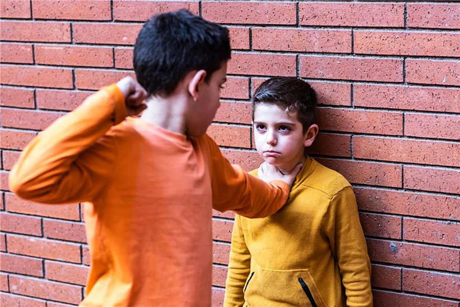
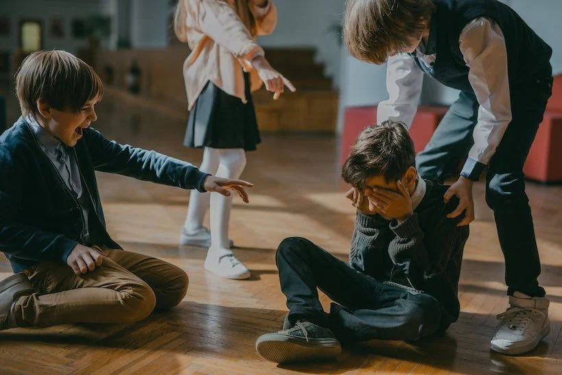
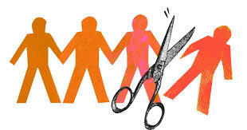

What is Bullying?
Bullying is unwanted, repeated, and intentional aggressive behavior involving a real or perceived power imbalance, designed to cause physical, social, or emotional harm.
It can happen anywhere — in school, at home, or online — and it affects millions of young people every day.
Different Types of Bullying:
- Physical Bullying
- Hitting, pushing, damaging someone's belongings, or any unwanted physical contact.
- Verbal Bullying
- Name-calling, teasing, threatening, or using hurtful language to put someone down.
- Social Bullying
- Deliberately excluding someone, spreading rumours, or damaging someone's reputation.
- Cyberbullying
- Using phones, social media, or the internet to harass, threaten, or embarrass someone.



.jpg)
How can you help?
If you see bullying happening, you have the power to make a difference.
Being an active bystander, an upstander, someone who speaks up, can change or even save someone's life.
Speak up in the moment
If it's safe to do so, calmly tell the person doing the bullying to stop.
Sometimes all it takes is one voice.
Support the person being bullied
Check in on them. Sit with them at lunch.
Let them know they're not invisible. Small acts of kindness mean everything.
Report it to an adult
You are not a snitch. You are a hero.
Tell a teacher, parent, or counsellor what you witnessed.
Don't share or react to cyberbullying
If you see something cruel posted online, don't like, share, or comment.
Report it and reach out to the person privately.